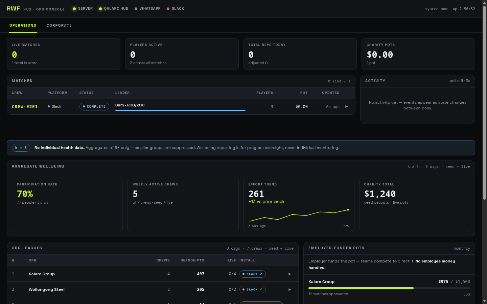

Reps With Friends · living documentation
The system wiki
Reps With Friends is a real-time multiplayer fitness game. A group agrees on battle days; on each one, every player races to their adjusted target (200 by default) — the first there takes the Daily Win, everyone who finishes after still banks the day, and Daily Wins stack into a weekly season. Stakes — dinner, a dare, a favour, or a charity pot the winner directs — settle when the season ends. One hero app plus bots inside the WhatsApp/Slack chats the crew already lives in. Rules per the master Source of Truth (Sep 2026), running on Engine V4.
This wiki documents every element and feature with screenshots, the actual mechanics underneath, and where each one lives in the code.
Chapters
Each feature entry carries: what it is, a screenshot, how it works underneath (the real multipliers, thresholds and data flow), where it lives, and an honest status badge.



Game Rules live
The daily model: adjusted target 200, first-to-target Daily Win, bank-day continuation, failed days and streaks, tier handicaps (couch ×1.5 → athlete ×0.85), weekly seasons 1:1, stakes at season level, the SOT power-up canon with the corrected steal/shield — with the exact math.
App Screens v4 current
The Source-of-Truth app (/v4): Battle Home, quick/keypad/timed logging, power-up loot stack, winners family, season hub + stakes, the critical states (offline, sync conflict, rest day, winner-known) — plus the preserved v1 reference build screen by screen.
The Four Versions all runnable
v1 Figma-faithful → v2 board → v3 3D course → v4 the SOT app. What each version proved, what carried forward, and where each still runs — the design progression is a deliverable.
Bots SOT in flight
WhatsApp + Slack on one command bus — the running 300-era grammar, result cards, rematch, nemesis, Monday digest, a real simulated transcript; and the SOT daily-model grammar landing in parallel (sot-bus, tested).
Verification live (P1)
Camera rep counting with MoveNet (angle-threshold state machine, 100% on-device) and BLE heart-rate straps scored as Karvonen %HRR — the anti-cheat lane.
Avatars exploration
The /avatars studio: 8 procedural styles side by side, GLB model characters, BVH mocap, wardrobe and species heads — plus the measured investigation of why looks match or miss.
Ops & Testing live
The /hub console, /debug bot simulator, the deploy pipeline (GitHub → Cloudflare Pages), the REST API, the AI layer, and every test suite and what it proves.
Design System live
Tokens (dark athletic + Ben's gold/ink adoption), the gold-vs-lime theme question, the 16-component library, the 22-icon set, and the /system dissemination page.
Status & Roadmap in motion
The SOT reconciliation (where the build stands vs the master spec), open questions answered in code, per-element status across families, and the blockers register.
The system at a glance
| Surface | What it is | Where |
|---|---|---|
| Site | Concept showcase — Three.js hero, interactive handicap demo, AI guide | / · site/ |
| v4 app | THE SOT APP — daily battles, seasons, stakes on Engine V4 (current) | /v4 · apps/sot/ |
| App | Phone-first PWA (our first-party build with camera + HR verify) | /app · apps/web/ |
| Figma app | Ben's full design as a navigable offline app — the v1 reference build | /figma-app · apps/figma-app/ |
| Board / 3D | v2 board-game and v3 3D-course presentations — preserved | /v2 · /v3 |
| Bots | WhatsApp (via Qalarc Hub) + Slack (Bolt) — one command grammar | apps/bot-whatsapp · apps/bot-slack |
| Hub console | Ops + corporate console, live /api/state polling | /hub · apps/hub/ |
| Debug | Live bot simulator + element gallery | /debug · apps/debug/ |
| System page | Complete dissemination: tokens, components, 36 elements with status | /system · apps/systempage/ |
| API | REST backend (crews / matches / seasons) — the MVP state foundation | apps/api/ · port 4174 |
| Avatars | Local-only avatar style + tuning studio | /avatars · apps/avatars/ (local) |
| Wiki | This documentation | /wiki · apps/wiki/ |
Everything runs from one Bun dev server (bun serve.ts → localhost:4173) locally, and from Cloudflare Pages at rwf.qalarc.com in production. See Ops & Testing.